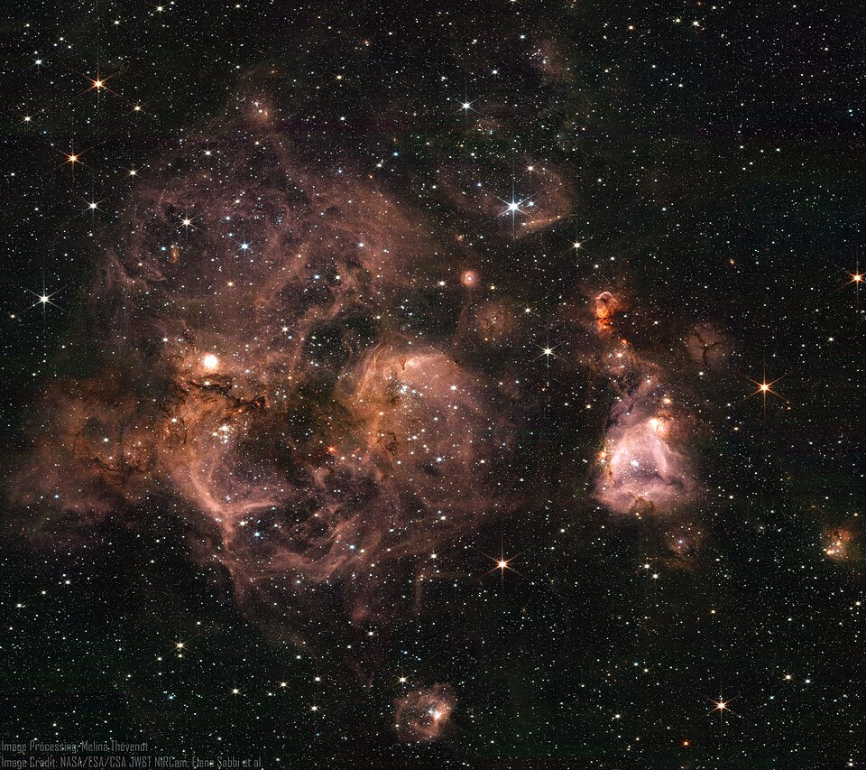

October 05, 2026
The Ghost Molecule: Webb Catches Chemistry's Most Elusive Building Block Around a Dying Star

Image: NASA/ESA/CSA, JWST NIRCam (H II region in the Large Magellanic Cloud)
The Ghost Molecule: Webb Catches Chemistry's Most Elusive Building Block Around a Dying Star
Some molecules are ghosts. They live for fractions of a second, react with nearly everything they touch, and barely leave a trace for a telescope to find. This week, the James Webb Space Telescope caught one of the most elusive ghosts of all — and found it in abundance where nobody expected so much.
The find
An international team led by researchers at the Instituto de Astrofísica de Canarias (IAC) reports the first secure detection of the methyl radical (CH₃) in the environment of an evolved, carbon-rich star — SMP LMC 011, a dying star in the Large Magellanic Cloud, a small galaxy that orbits our Milky Way. The results are published in The Astrophysical Journal Letters as part of the JWST Proto-PAH Project, a collaboration spanning the IAC with colleagues in Canada, the United States, and Europe.
Why this molecule is so hard to catch
CH₃ is one of the simplest and most important building blocks in carbon chemistry: one carbon atom, three hydrogens, and an unpaired electron that makes it extremely reactive — it grabs onto almost any molecule it meets. That reactivity makes it short-lived and very hard to observe.
It is also nearly invisible to most telescopes. Because of its symmetric shape, methyl produces no signal in the radio range where astronomers detect most molecules. It can only be identified through a specific vibration in the mid-infrared — at wavelengths Earth's atmosphere blocks entirely. Detecting it directly requires a space observatory as sensitive as JWST, and specifically its Mid-Infrared Instrument (MIRI).
"The methyl radical is one of the most reactive and short-lived molecules we can look for in space, and it barely leaves a fingerprint that telescopes can see," explains Jialu Li, an IAC postdoctoral researcher who led the study. "Detecting it directly, and actually measuring how much is there, was only possible thanks to the extraordinary sensitivity of JWST."
A molecule that shouldn't be so abundant
Using MIRI, the team didn't just detect CH₃ — they measured how much of it is present, and the amount is surprisingly large. Standard chemistry, in which ultraviolet light breaks apart simpler molecules like methane, should produce only a modest quantity of methyl. Something else must be supplying the excess.
The researchers propose that the dust grains themselves are the extra source. Around dying stars, carbon and hydrogen condense into a sooty, disordered material known as hydrogenated amorphous carbon. The team suggests this dust is being eroded by UV photons from the central star and/or by shocks — releasing methyl radicals straight into the surrounding gas.
"The amount of methyl we measure is far too high for ordinary gas-phase photochemistry to explain," says co-author Domingo Aníbal García-Hernández. "The most likely explanation is that the carbon dust grains are being eroded by UV light and/or shocks, releasing this molecule back into the gas phase; so the dust does not only grow, it can also break down and feed the chemistry."
Turning the story of cosmic dust around
The finding reverses the usual picture of how large carbon molecules relate to dust. Polycyclic aromatic hydrocarbons (PAHs) are normally thought to form in the gas and then lock away into dust grains. This result suggests the opposite can also occur: grains can erode and feed small, reactive molecules back into the gas, where CH₃ acts as a building block to assemble new ring-shaped aromatic molecules — a two-way feedback between dust and gas-phase chemistry.
The evidence lines up. This star is also exceptionally rich in benzene (C₆H₆), the simplest aromatic ring. The abundant methyl radicals can attach to benzene and its derivatives — successive methyl additions turn benzene into toluene, then ethylbenzene, and on toward ever larger aromatic molecules. A second clue supports the picture: the team searched for ethane (C₂H₆), which would form if methyl simply reacted with itself, and did not find it. The CH₃ is being channeled into growth reactions instead of dead-ending — feeding the build-up of molecular complexity.
Why it matters
"Evolved stars like this one are among the main factories of carbon dust and complex organic molecules in the Universe, the raw material for future stars, planets, and perhaps life," adds co-author Arturo Manchado. "Our result identifies the methyl radical as a key piece in that process, and it tells us that current chemical models must be updated to include these reactions."
Dying stars seed the cosmos with the carbon that becomes planets, atmospheres, and eventually living things. This detection says the chemistry of that seeding is richer — and more cyclical — than the textbooks assumed. The dust doesn't just form and settle. It can break apart, feed the gas, and grow new complexity from the wreckage.
The study "The JWST Proto-PAH Project: Detection of the methyl radical CH₃ in the highly evolved C-rich object SMP LMC 011" (J. Li et al.) appears in The Astrophysical Journal Letters, 2026.
Source: Instituto de Astrofísica de Canarias (IAC) press release, reporting a study in The Astrophysical Journal Letters — read the original report
← Back to latest stories